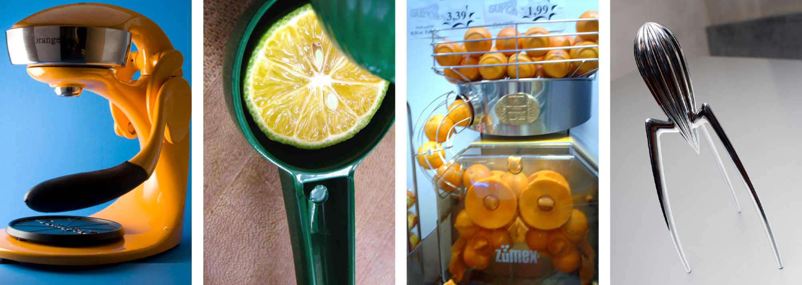
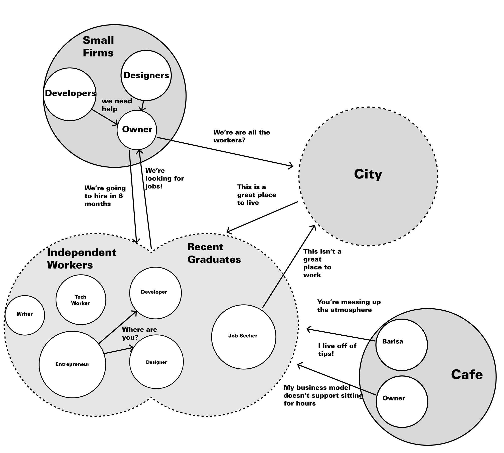
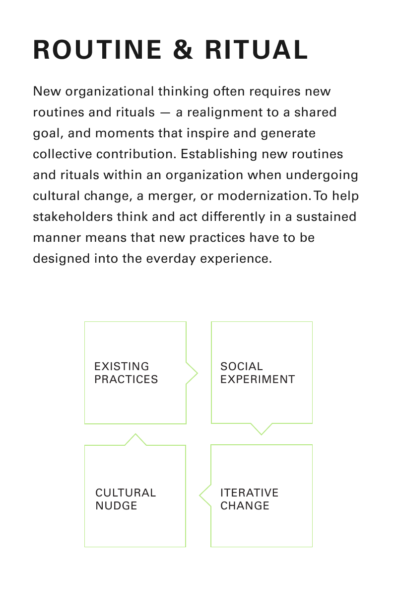
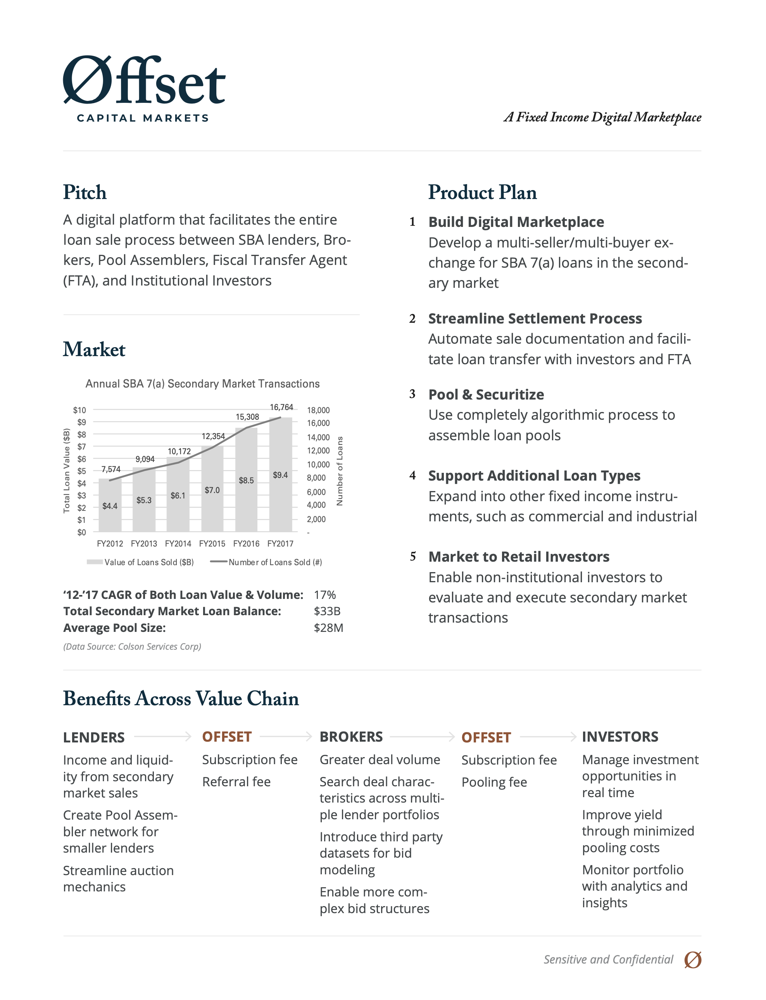

Portfolio
Introduction
I call myself an Interaction Designer even though I don't think that's a thing anymore. It's long been supplanted by terms like UI and UX and Product. I learned design in a similar way that I learned to code, on paper. I learned that screens are just one medium to connect people to each other and to larger communities, cultures, and world views. What UI and UX leave behind are the basic arts of design–thoughtfulness, empathy, and a pluralistic view that believes every new opinion gets us closer to a more accurate view of the world and better systems to facilitate that new world.
Most of the work I do isn't visual, it's organizational, cultural, and entrepreneurial. So instead of a bunch of whizzbang screens, here are a set of case studies–mostly text based stories taking readers through the processes of the projects. Almost no projects in the 15 years of my career have had clean double-diamond or four step approaches. Mostly they flowed with the demands of the larger organizations. Stop here for a presentation, double-down on research, or build now, research later.
UPMC

This was the project that got me excited about Service Design. Wayfinding, Service Blueprints, and a clear set of project phases. In addition to standard methods, I developed a remapping technique to understand the values of individuals and community ethos: prompted with a set of four image cards per question, users were asked “if healthcare in the future were” one of the four juicers, one of the four magazines, one of the four vacation spots, one of the four cars, “which one would it be and why?” The choices they made were irrelevant; what mattered was their justifications: “I like the green juicer because it’s personal. It’s one-at-a-time. With the industrial juicer, I would feel like just another orange.”
Catapult Coworking Community
Catapult PGH was the first coworking space in Pittsburgh–before anyone even knew what coworking meant. It was a product of co-design and a lot of research to understand the needs of independent workers, the City of Pittsburgh, and local small firms in need of talent. This was primarily a Service Design project turned thriving donation-based community space.

LegalSifter
This is an extremely condensed version of how my startup went from back-of-napkin to research to launch to pivot. It was a wild ride where my team made something awesome, launched it to what I thought was a great success, and immediately had to pivot to a B2B model with a whole new product to save the company.
Pitch Fest
 I was asked to developing a venture pipeline of fintech ideas to be grown as spin-offs of the bank. I did everything from identifying ideas that had merit, creating plans to build technology, to developing revenue models and go to market strategies.
The problem wasn't the formal processes and procedures. There was an amazing COO in place that kept everything running smoothly. The problem was the lack of a culture of excitement and creation needed to build an innovative culture. Pitch Fest was the solution to that problem. By turning routine meetings and product decks into fun and exciting corporate concept pitches, the product pipeline flourished and the very first businesses were launched into the wild.
Offset Capital Markets
This was a very corporate finance-y project that was more about opportunity finding and making a case for its existence in the bank than a traditional design project. Instead of project decks, we had a constantly updating one pager to circulate around the bank.

LikeNow
LikeNow is a two-sided marketplace for the long tail of verticals that will never have enough use to warrant individual apps. Think Craigslist for the on-demand industry.